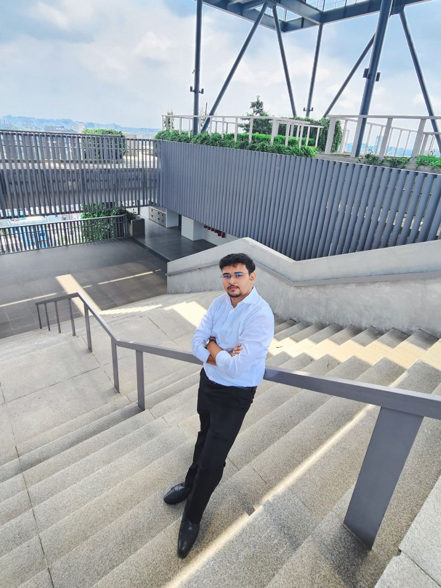

Computer Science Senior | AI Researcher | Founder of Railo

Name: Md. Zarif Latif
Email: zarif.latif.biz@gmail.com
Phone: +880 1308035203
Address: Adabor, Dhaka
Hi, I am Zarif. As a Computer Science senior, my focus lies at the cutting edge of artificial intelligence—specifically Graph-Enhanced Causal Reinforcement Learning and Mechanistic Interpretability. I am passionate about demystifying complex models and applying them to tangible, real-world problems. Alongside my academic research, I apply my knowledge practically as the founder of Railo, an automated security remediation platform. When I am not deep into research papers or building out SaaS architectures, you wll likely find me exploring the city or reading up on philosophy.
Founded and currently leading Railo, an automated security remediation platform that helps organizations identify and fix security vulnerabilities in their systems.
Completed internship at Bangladesh Computer Council, ICT Ministry. Where I worked in the NOC (Network Operation Center) and RnD (Research, Innovation and Development) wing. I was involved in various projects related to network management and research on emerging technologies.
Railo is a next-generation security automation platform designed specifically for B2B engineering teams facing SOC 2, ISO 27001, and enterprise compliance audits. While traditional SAST tools (like Semgrep or Dependabot) generate thousands of alerts that cause "alert fatigue" and bog down engineering velocity, Railo acts as an active merge-queue firewall. It doesn't just find vulnerabilities—it automatically writes the fix, mathematically proves its safety, and opens a companion pull request.
Engineered a causal world-model simulation framework that ingests high-entropy market data and applies macroeconomic shocks (e.g., unexpected rate hikes, supply chain fractures) to client watchlists. Built an automated orchestration daemon that evaluates risk exposure against a graph-enhanced state and generates highly structured, evidence-backed decision logs, ensuring auditability and actionable insights over generic AI commentary.
GeoBadge is a secure, distributed attendance verification system designed to replace traditional biometric hardware in industrial and high-throughput environments (e.g., manufacturing plants, garments factories). Traditional fingerprint scanners often fail in dusty conditions and create massive bottlenecks during shift changes. GeoBadge resolves this by introducing a "Zero-Click" Geofenced Protocol utilizing cross-platform mobile edge-validation, an asynchronous cloud brain, and a relational persistence layer.
In this research, we introduce a unified, highly efficient, and transparent machine learning framework addressing the computational complexity and "black-box" nature of modern static PE malware detectors. By applying Information Gain feature selection to the EMBER 2018 dataset, we aggressively minimized the feature space by 95.8% (from 2,381 to 100 features). This allowed our optimized LightGBM "Lite" model to slash training time by 69.3% while actually boosting the baseline F1-score to 0.9638. To prove its real-world operational viability for Security Operations Centers (SOCs), we subjected the framework to rigorous cross-dataset zero-shot evaluation. It demonstrated exceptional resistance to concept drift over a 24-month temporal window on the BODMAS dataset (F1 = 0.9876) and scaled seamlessly to process 100,000 streamed samples from SOREL-20M at a rate of ~6,700 samples/second. Furthermore, post-hoc global and local SHAP explanations confirmed that the model relies on stable, structurally distributed Indicators of Compromise (IOCs), proving resilient against adversarial feature-space benign-mimicry attacks.
Verification-Gated Neuro-Symbolic Program Repair (Working Paper) Designed VeriPatch, a neuro-symbolic framework that safely automates software vulnerability patching. It uses quantized Large Language Models (LLMs) to infer patch intent and deterministic AST transformations to apply the fix. To prevent LLM hallucinations from introducing insecure code, I engineered a novel Z3 SMT solver gate that mathematically verifies the patch's semantic safety in under 1ms. Evaluated on the SeCodePLT benchmark, the system successfully caught hallucinated patches with 100% precision and achieved an overall 95% correct-and-secure repair rate. (Tools: Python, Z3 Theorem Prover, HuggingFace, AST Manipulation)
In this mechanistic interpretability study, I investigated the formation of "induction heads"—the core transformer circuits responsible for in-context learning—in Bengali language models. I discovered a structural "Tokenization Ceiling" where English-centric tokenizers (like Pythia's) severely fragment Bengali words, destroying the repetition patterns required for these circuits to emerge regardless of model scale or fine-tuning. By evaluating models with robust multilingual tokenizers (BLOOM) and testing on downstream benchmarks (Belebele), I proved that this tokenization barrier physically breaks a model's ability to perform few-shot in-context learning for under-represented languages. This work highlights critical blind spots in how mechanistic interpretability findings transfer across languages.
This undergraduate thesis introduces a Tripartite pipeline (LightGCN-Causal-BCQ) designed to bridge the gap between predictive analytics and prescriptive decision-making in customer relationship management. Traditional churn systems fail to capture causal mechanisms, frequently wasting resources or triggering counterproductive customer behavior. To address this deadlock, our framework utilizes LightGCN to extract topologically rich, deconfounded state embeddings from user-item interactions, mitigating severe real-world corporate data sparsity. These graph structures feed into a causal inference module that calculates the Conditional Average Treatment Effect (CATE) via X-learners, surgical isolating responsive customers while shielding highly volatile user profiles. Finally, policy optimization is framed within a Markov Decision Process trained via Batch-Constrained Q-Learning (BCQ), preventing out-of-distribution extrapolation errors by binding action choices within the safe boundaries of historical logging. Benchmarked via robust off-policy evaluation on the Open Bandit and KuaiRec datasets, the pipeline achieved massive variance reduction and demonstrated stable, superior structural generalization compared to standard deep learning and flat linear bandit architectures.
| Title | Type | Tech Stack | Status |
|---|---|---|---|
| Projects | |||
| Railo | SaaS Platform | DevSecOps, CI/CD, SMT Solvers | Live |
| Aetherius | AI Platform | Causal Inference, GNN, Python | Completed |
| GeoBadge | Distributed System | Mobile, Cloud, Geofencing | Completed |
| Research Papers | |||
| Lightweight Malware Detection | Research Paper | LightGBM, SHAP, Python | Published |
| VeriPatch - Neuro-Symbolic Repair | Working Paper | Z3, LLMs, AST, Python | In Progress |
| Bengali Induction Heads | Working Paper | BLOOM, Pythia, Mechanistic Interp | In Progress |
| Graph-Enhanced Customer Retention | Undergrad Thesis | LightGCN, BCQ, Causal ML | In Progress |
"The only way to do great work is to love what you do." - Steve Jobs